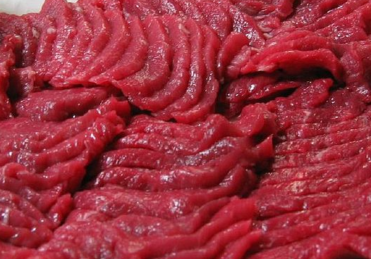

ラーメン
極鶏 とんでもなく美味い京都一乗寺のラーメン屋恐らく京都一美味い鶏ガラをなくなるまで煮込んだこってりスープが特徴レンゲがたつほど濃厚で食べれるスープが名物 また最近は二郎インスパイアのダク郎という意味わからんくらい美味しいメニューが出来たのでぜひ行ってほしい
一蘭 チェーンならここ正統派のこってりでカスタムも自在替え玉もうまい欠点は量が少ない。マジで。
通堂 一番美味い塩ラーメン。二種類あり好きなほうを選ぶといい塩の旨味がきいてて最高だが沖縄にしかない（一応横浜のラーメン博物館にもある）僕はわざわざこのために沖縄に行ってるが みんなは沖縄旅行した時によってほしい
肉
牛 結局一番美味いうまいように作られてうまいように育てられてるからマズいわけない国産牛ばっかり押してくる奴は馬鹿だと思ってる。けど高い悲しい
鶏 庶民の味方美味しい鳥刺しが一番美味しいけどスーパーで買った鶏肉を生で食うのはカンピロバクターになるからやめよう！（一敗）

馬 なまでくえるお肉美味しい上品なうまさとさっぱりとした油が特徴お肉食べに行くときは馬があるか確認しよう！